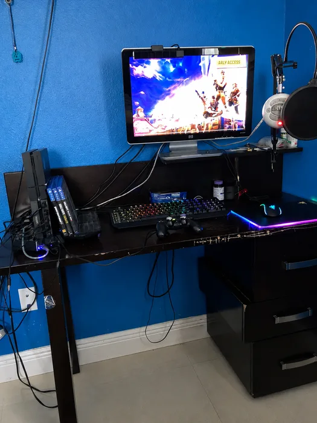
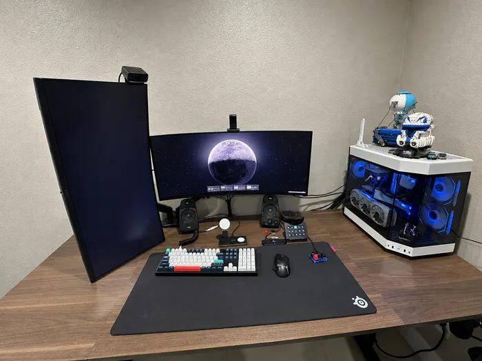
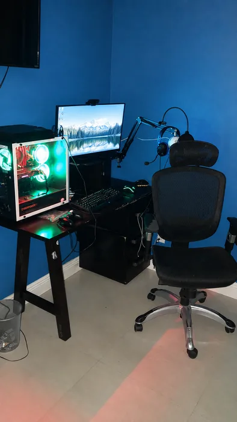
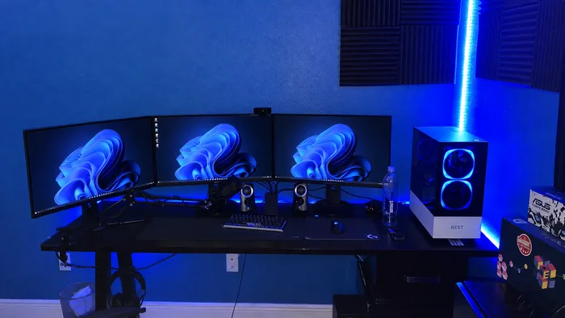

Hey, I'm Vic.




I got my start in 2018, when my dad bought me my first real gaming PC — a prebuilt with an i7-8700, an RTX 2070, and 16GB of RAM. I'd been gaming on a PS4 up to that point, so it was a serious upgrade, and I had no idea what was actually inside the case. Curiosity got the better of me, and I ended up taking the whole thing apart just to understand it — no real plan, just hours of trial and error until I had it back together and running.
That was the beginning. I started teaching myself everything I could about PC hardware, and found a lot of that early direction from Greg Salazar's "Fix or Flop" series on YouTube — it's a big part of what convinced me this was something I could actually get good at. My first real project was upgrading that same PC myself: new case, RGB memory, an AIO cooler, new fans. I ran into plenty of problems I didn't know how to solve yet, but working through them taught me more than any tutorial could have.
From there I started building and upgrading PCs for classmates, which is really where I learned to work with other people's expectations and budgets, not just my own. That eventually turned into my first paid position at PCG, a local shop specializing in custom gaming builds, and later into a technician role at Geek Squad, where I built out my repair and diagnostic experience across a much wider range of hardware.
BuildsByVic is what happens when I take all of that and do it on my own terms — direct pricing, honest recommendations, and the same attention to detail whether it's a full custom build or a quick repair. I'm based in Tampa and take jobs across Lutz, Wesley Chapel, Carrollwood, and Clearwater. If your PC needs work, or you've been wanting to finally build the rig you've been planning, I'd like to help. I'm also fluent in Spanish, so if that's easier for you, just let me know.
Background
Geek Squad-trained, self-taught long before that — years of hands-on PC building, troubleshooting, and repair.
Approach
Straight answers, fair pricing, and no pressure to buy more than you actually need.
Coverage
Tampa, Lutz, Wesley Chapel, Carrollwood, and Clearwater — onsite or drop-off.